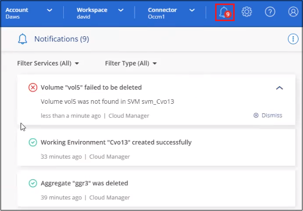

请求文档变更
请求文档变更 在 GitHub 上编辑
在 GitHub 上编辑 提供者指南
提供者指南监控帐户中的操作
您可以监控 Cloud Manager 正在执行的操作的状态，以查看是否存在需要解决的任何问题。您可以在通知中心、时间线中查看状态、也可以向您的电子邮件发送通知。
此表对通知中心和时间线进行了比较，以便您了解每个通知中心的功能。
| 通知中心 | 时间线 |
|---|---|
显示事件和操作的高级状态 |
提供每个事件或操作的详细信息以供进一步调查 |
显示当前登录会话的状态—注销后，此信息不会显示在通知中心中 |
保留上个月的状态 |
仅显示在用户界面中启动的操作 |
显示 UI 或 API 中的所有操作 |
显示用户启动的操作 |
显示所有操作，无论是用户启动的操作还是系统启动的操作 |
按重要性筛选结果 |
按服务，操作，用户，状态等进行筛选 |
可以通过电子邮件向帐户用户和其他人发送通知 |
无电子邮件功能 |
使用通知中心监控活动
通知可跟踪您在Cloud Manager中启动的操作的进度、以便您验证操作是否成功。您可以通过它们查看当前登录会话期间启动的许多Cloud Manager操作的状态。目前、并非所有服务都会将信息报告到通知中心。
您可以通过单击通知铃( ）。铃中小气泡的颜色表示处于活动状态的最高级别严重性通知。因此，如果您看到红色气泡，则表示您应查看一条重要通知。
）。铃中小气泡的颜色表示处于活动状态的最高级别严重性通知。因此，如果您看到红色气泡，则表示您应查看一条重要通知。

此外、您还可以将Cloud Manager配置为通过电子邮件发送通知、以便即使未登录到系统、您也能了解重要的系统活动。您可以将电子邮件发送给您的NetApp云帐户中的任何Cloud Central用户、也可以发送给需要了解某些类型的系统活动的任何其他收件人。请参见 设置电子邮件通知设置 。
通知类型
通知分为以下几类：
| 通知类型 | Description |
|---|---|
严重 |
发生的问题可能会导致服务中断，如果不立即采取更正操作。 |
error |
以失败结束的操作或过程、或者如果不采取更正操作、可能导致失败。 |
警告 |
为确保问题描述 不会达到严重级别而应注意的。此严重性的通知不会中断发生原因 服务、可能不需要立即采取更正操作。 |
建议 |
系统建议您采取措施来改进系统或特定服务；例如：节省成本、建议新服务、建议安全配置等 |
信息 |
向追加信息 提供有关操作或进程的消息。 |
success |
操作或进程已成功完成。 |
筛选通知
默认情况下，您将看到所有通知。您可以筛选通知中心中显示的通知，以便仅显示对您重要的通知。您可以按 Cloud Manager " 服务 " 和通知 " 类型 " 进行筛选。

例如，如果您只想查看 Cloud Manager 操作的 " 错误 " 和 " 警告 " 通知，请选择这些条目，您将只看到这些类型的通知。
设置电子邮件通知设置
您可以通过电子邮件发送特定类型的通知、以便即使未登录到Cloud Manager、您也可以了解重要的系统活动。您可以向NetApp帐户中的任何用户或需要了解某些类型的系统活动的任何其他收件人发送电子邮件。
*注意：*如果Connector安装在无法访问Internet的站点上、则不支持发送电子邮件通知。
默认情况下、客户管理员将收到所有"严重"和"建议"通知的电子邮件。默认情况下、所有其他用户和收件人都配置为不接收任何通知电子邮件。
您必须是帐户管理员才能自定义通知设置。
-
在Cloud Manager菜单栏中、单击*设置>警报和通知设置*。

-
从_Account Users_选项卡或_Additional Recipiers_选项卡中选择一个或多个用户、然后选择要发送的通知类型：
-
要对单个用户进行更改、请单击该用户的Notifications列中的菜单、检查要发送的通知类型、然后单击*应用*。
-
要对多个用户进行更改、请选中每个用户对应的框、单击*管理电子邮件通知*、检查要发送的通知类型、然后单击*应用*。

-
添加其他电子邮件收件人
"Account Users"选项卡中显示的用户将自动从NetApp帐户中的用户(从 "管理帐户页面"）。您可以在_Additional recipients _选项卡中为无权访问Cloud Manager但需要获得特定类型警报和通知通知的其他人员或组添加电子邮件地址。
-
在警报和通知设置页面中、单击*添加新收件人*。

-
输入姓名、电子邮件地址、选择收件人将收到的通知类型、然后单击*添加新收件人*。
取消通知
如果您不再需要查看通知，可以从页面中删除这些通知。您可以一次性取消所有通知，也可以取消单个通知。
要取消所有通知，请在通知中心中单击  并选择 * 全部取消 * 。
并选择 * 全部取消 * 。
要取消单个通知，请将光标悬停在通知上方，然后单击 * 取消 * 。
审核帐户中的用户活动
Cloud Manager 中的时间线显示了用户为管理您的帐户而完成的操作。其中包括关联用户，创建工作空间，创建连接器等管理操作。
如果您需要确定执行特定操作的人员，或者需要确定操作的状态，则检查时间线会很有帮助。
-
在Cloud Manager菜单栏中、单击*设置>时间线*。
-
在筛选器下，单击 * 服务 * ，启用 * 租户 * ，然后单击 * 应用 * 。
时间线将更新以显示帐户管理操作。